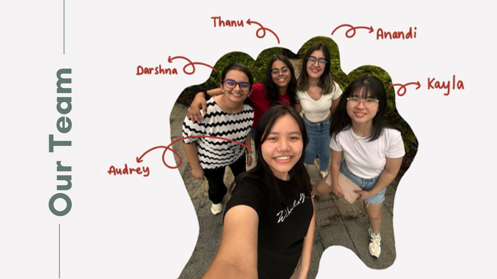

Trash Day, Without the Guesswork
Our problem statement: how might we create an effective cleaning solution to improve hygiene
standards and efficiency for cleaning staff? Walking the SUTD hostel, we mapped footfall,
odor hotspots, and bin usage across Blocks 55, 57, and 59, and found residents were
outnumbering general bins roughly 10 to 1 — with over half of all waste being food
scraps left unsorted in a single general bin. Trash?CAN! answers this with an automated
sorter that separates waste at the point of disposal and reports its own status, so cleaning
staff stop making rounds to bins that aren't full and stop manually sorting bins that are.

Team SC02 Group 1: Kayla, Darshna, Anandi, Thanushree, and Audrey.